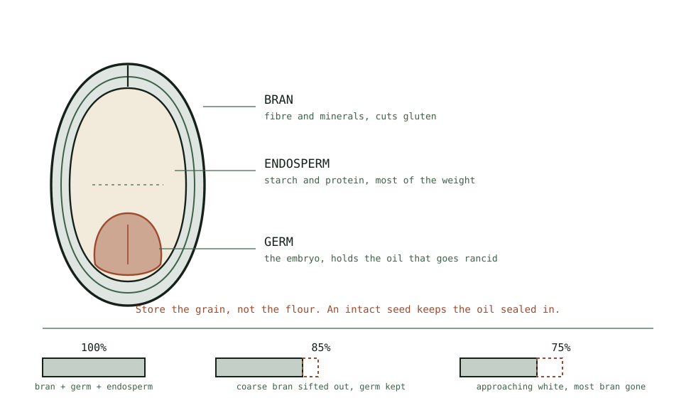

Guide
Does Milling Pay for Itself?
Bulk grain costs less per kilogram than bagged flour, and how fast a mill pays back depends almost entirely on how often you bake.
As an Amazon Associate this site earns from qualifying purchases. Links to products may be affiliate links. This costs you nothing extra and does not change what gets recommended. Nothing here is medical advice.
Yes, eventually, and the timescale depends almost entirely on how often you bake and which flour you are replacing.
This page works through the arithmetic honestly, including the cases where the answer is no. Prices vary too much by country and season to quote, so what follows is a method you can apply to your own numbers rather than a table of figures that would be wrong for you.
The milling hub makes the case on flavour and storage. This is the money.

The basic arithmetic
Four numbers, and you can find all of them in an afternoon.
Cost per kilogram of bulk grain. Look at a twenty five kilogram sack from a mill, farm, or wholesaler, not a kilogram bag from a supermarket.
Cost per kilogram of the flour you currently buy. Use the flour you would actually be replacing, which for most people is wholemeal or a decent bread flour rather than the cheapest white.
Your annual flour consumption. A standard loaf takes four hundred to five hundred grams. Multiply by how many you bake, add whatever goes into pancakes, pasta, and thickening, and round up.
The cost of the mill.
Then: annual saving equals annual consumption times the difference in price per kilogram. Payback in years equals mill cost divided by annual saving.
Milling loses very little weight, so a kilogram of grain is close to a kilogram of flour. That simplifies the comparison usefully.
What changes the answer most
How often you bake. This dominates everything. A weekly loaf is around twenty five kilograms a year. Baking twice a week doubles the saving and halves the payback period. Baking monthly makes the payback long enough that the financial argument stops carrying much weight.
Which flour you are replacing. Replacing cheap supermarket white flour gives the weakest case, since that is one of the cheapest foods available anywhere. Replacing organic wholemeal, speciality flour, or gluten free flour gives a far stronger one.
Which mill you buy. A hand crank burr mill costs a fraction of an electric impact mill and pays back correspondingly faster. This is the strongest argument for starting manual beyond simply testing the habit.
Whether you buy grain in bulk. Kilogram bags of wheat berries from a supermarket often cost more than bagged flour. The whole economic case depends on sacks.
Gluten free. The strongest case by a wide margin. Rice, sorghum, and buckwheat cost a small fraction as whole grain compared with packaged gluten free flour, which carries a substantial specialty premium.
Three worked cases
Using the method rather than numbers, since your prices will differ.
The weekly baker replacing wholemeal. Twenty five kilograms a year, a moderate price gap, a mid range mill. Payback typically lands somewhere in the region of two to four years. The mill then keeps saving indefinitely, and the flavour was the reason anyway.
The gluten free household. Perhaps thirty kilograms a year, a very large price gap, and a mill that handles rice. Payback commonly lands within a year, sometimes considerably less. This is the case where the financial argument alone justifies the purchase.
The occasional baker. Five to ten kilograms a year, any price gap. Payback measured in many years, and a sack of grain that will sit for three. Here the honest answer is that milling is a hobby you are choosing rather than an investment, and that is a perfectly good reason to do it.
Run your own version. Four numbers and five minutes.
Costs people forget
The sack you do not finish. Grain keeps for years, so this is less severe than with most bulk buying, and buying three years of a wheat you use twice still ties up money and space.
Storage. Sealed buckets are cheap and they occupy a corner of a cupboard permanently.
Electricity. Trivial. An electric mill runs for a few minutes at a time and does not register on a bill.
Your time. Two to four minutes per bake for an electric mill, fifteen to twenty five for a manual one. If you value the manual time at anything, a hand mill's apparent cost advantage narrows considerably.
Learning cost. The first three or four bakes with a new grain are calibration. Some flour is wasted while you work out hydration.
A mill that stops being used. The most expensive outcome by far, and the reason the mill choosing guide argues for starting cheap.
Savings people forget
Bran is free flour. Sifting produces bran you would otherwise buy separately, and it goes into porridge, crackers, and soakers.
Access to flours you cannot buy. Fresh pastry flour, single variety wheats, and blends at your own ratio. These have a real value that does not appear in a price comparison because there is often no shop equivalent.
Cracked grain for porridge. A burr mill replaces bought rolled oats and steel cut oats at a lower cost per portion.
Less waste. Flour that goes rancid in a cupboard is money thrown away. Grain does not.
Bulk buying discipline. Households that buy grain in sacks tend to bake more and buy fewer packaged baked goods, which is a real saving that never shows up in a flour comparison.
When the answer is no
Being direct about this, since the whole hub argues for a purchase.
If you bake a few times a year, a mill will not pay for itself in any reasonable period. Buy good flour instead.
If you only replace cheap white flour, the price gap is small enough that payback is very long.
If counter and cupboard space is genuinely tight, an unused mill costs more than it saves.
If nobody in the household will run it but you, and you travel, it will sit.
If you want consistency above all, fresh flour varies between sacks and harvests in a way bagged flour does not, and some bakers find that genuinely annoying rather than interesting.
None of these makes milling a bad idea. They make it a hobby rather than an economy, and hobbies are allowed to cost money.
Making the case work faster
Four things that shorten payback materially.
Buy grain in sacks, from a mill or a farm. This is the single biggest lever and the whole basis of the arithmetic.
Split a sack with another household if twenty five kilograms is more than you will use in a year. Agree the split before it arrives.
Start with a hand mill. Low cost, fast payback, and it answers whether the habit is real before you commit further.
Buy used. Grain mills appear regularly on second hand listings, usually barely used. The mill choosing guide covers what to check.
Bake more. Slightly circular, and true. The mill pays back faster the more you use it, and having fresh flour available tends to increase how much people bake.
The value that is not financial
Worth naming, because a payback calculation misses most of why people keep milling.
Flavour. The clearest and least arguable benefit, and the one nobody regrets paying for. A side by side comparison settles it in one bake.
Access. Single variety wheats, ancient grains, and fresh pastry flour are difficult or impossible to buy as flour in most places. A mill is the only route to some of them.
Control. Your own extraction rate, your own blend, your own protein level. None of that is available from two bags of shop flour.
Provenance. Buying grain from a named mill or farm connects a loaf to a place in a way a supermarket bag does not, and for a lot of people that is the actual point.
Storage security. Grain keeps for years. Households that value having a real food reserve get that as a by-product.
The craft itself. Some people enjoy the process, the variability, and the learning. That is a legitimate reason to own anything.
A mill bought purely on payback arithmetic and used weekly will pay back. A mill bought for these reasons and used weekly will pay back too, and the owner will not have been counting.
The honest framing is that milling is a hobby with a favourable economic side effect, rather than an investment with a pleasant hobby attached.
RUN THE NUMBERS
The method rather than the figures.
| Step | What to find |
|---|---|
| 1 | Price per kg of bulk grain, from a sack |
| 2 | Price per kg of the flour you actually buy |
| 3 | Difference between them |
| 4 | Your annual flour use in kg |
| 5 | Annual saving: step 3 times step 4 |
| 6 | Payback in years: mill cost divided by step 5 |
| Baking pattern | Annual flour | Financial case |
|---|---|---|
| Twice weekly | 50 kg plus | Strong |
| Weekly | About 25 kg | Reasonable |
| Fortnightly | About 12 kg | Marginal |
| Monthly or less | Under 6 kg | Hobby, not economy |
| Gluten free, any frequency | Any | Strongest of all |
WHAT GOES WRONG
Comparing bulk grain against the cheapest white flour. Compare against the flour you actually buy.
Buying kilogram bags of grain. That removes the entire economic argument. Buy sacks.
Buying an expensive mill before proving the habit. The most common way the arithmetic fails in practice.
Ignoring the sack you will not finish. Buy a year's worth first.
Counting the mill as an investment when you bake monthly. It is a hobby purchase and that is fine, provided you know which one you are making.
Forgetting the bran. It is free flour and it counts.
DO THIS NOW
- Find the price per kilogram of a twenty five kilogram sack of wheat from a mill or wholesaler, not a supermarket.
- Find the price per kilogram of the flour you actually buy, not the cheapest available.
- Estimate your annual use honestly, at four hundred to five hundred grams per loaf.
- Divide the mill cost by the annual saving, and decide whether that number is an investment or a hobby.
Next
The economics depend entirely on buying and keeping grain properly. Buying and storing grain covers sacks, containers, and how long it really keeps.
Starting cheap is the fastest route to payback and the best way to find out whether the habit is real. Impact, stone, or burr covers the options.